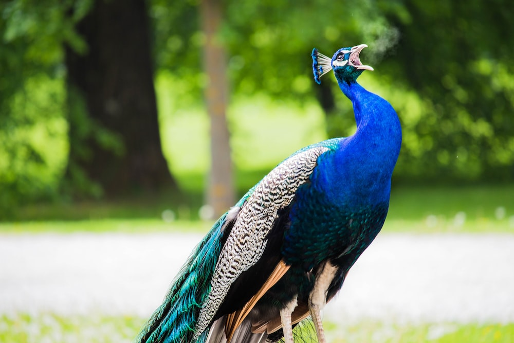

When European explorers discovered what
are today known as penguins in
the Southern Hemisphere, they notice

The origin of these birds is Asia.
The blue peacock specifically has origins in India.
This is why they are
commonly called Indian peacocks or peafowls.
The earliest known flower arranging
dates back to ancient Egypt.
Egyptians were decorating with
flowers as early as 2,500 BCE